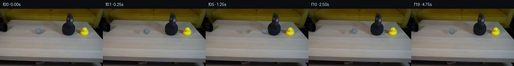

![首帧]()

Round 00
2026-11-05T15:15:23.871719+00:00像素候选变化代码 +235/−0inspection 更新
pixels 19c37b2d917c4eaa · code 482b8a726267d9fd
查看本轮 generate.py 真实 diff
--- previous/generate.py +++ current/generate.py @@ -0,0 +1,235 @@ +#!/usr/bin/env python3 +"""Generate the 20-frame locked-off tennis-ball / kettlebell sequence. + +All image synthesis is local and deterministic. Frame zero is passed through +unchanged. Later frames use an inpainted version of the source as the static +plate and a small, rotated sprite sampled from the source tennis ball. +""" + +from pathlib import Path + +import cv2 +import numpy as np +from PIL import Image, ImageDraw, ImageFont + +import artifact_io + + +ROOT = Path(__file__).resolve().parent +WIDTH, HEIGHT = 256, 144 +BALL_X0, BALL_Y0 = 96.0, 56.0 +CENTERS_X = np.array( + [96, 109, 122, 134, 143, 147, 140, 132, 125, 119, + 114, 110, 107, 105, 103, 102, 101, 101, 101, 101], + dtype=np.float32, +) + + +def smoothstep(edge0: float, edge1: float, x: np.ndarray) -> np.ndarray: + t = np.clip((x - edge0) / (edge1 - edge0), 0.0, 1.0) + return t * t * (3.0 - 2.0 * t) + + +def make_clean_plate(source: np.ndarray) -> np.ndarray: + """Remove the original 15 px ball using a tightly bounded local inpaint.""" + yy, xx = np.mgrid[0:HEIGHT, 0:WIDTH] + # Include the shaded antialiased rim and the tiny original grounding shadow. + mask = ((((xx - BALL_X0) / 9.3) ** 2 + ((yy - (BALL_Y0 + 0.4)) / 8.7) ** 2) <= 1.0) + mask = (mask.astype(np.uint8) * 255) + # Telea reconstructs this small area only from immediately adjacent pixels. + plate_bgr = cv2.inpaint(cv2.cvtColor(source, cv2.COLOR_RGB2BGR), mask, 4, cv2.INPAINT_TELEA) + return cv2.cvtColor(plate_bgr, cv2.COLOR_BGR2RGB) + + +def make_ball_sprite(source: np.ndarray) -> tuple[np.ndarray, np.ndarray]: + """Extract RGB and a subpixel circular alpha matte around the source ball.""" + # 21 x 21 gives room for rotation and the one-frame impact deformation. + x0, y0, side = 86, 46, 21 + rgb = source[y0:y0 + side, x0:x0 + side].copy() + yy, xx = np.mgrid[0:side, 0:side] + r = np.sqrt((xx - 10.0) ** 2 + (yy - 10.0) ** 2) + alpha = 1.0 - smoothstep(7.15, 8.35, r) + return rgb, alpha.astype(np.float32) + + +def rotated_sprite( + sprite_rgb: np.ndarray, + sprite_alpha: np.ndarray, + angle_degrees: float, + squash_x: float = 1.0, + squash_y: float = 1.0, + blur_x: float = 0.0, +) -> tuple[np.ndarray, np.ndarray]: + """Rotate and optionally deform the premultiplied ball sprite.""" + h, w = sprite_alpha.shape + center = ((w - 1) / 2.0, (h - 1) / 2.0) + matrix = cv2.getRotationMatrix2D(center, angle_degrees, 1.0) + + premult = sprite_rgb.astype(np.float32) * sprite_alpha[..., None] + rot_a = cv2.warpAffine( + sprite_alpha, matrix, (w, h), flags=cv2.INTER_CUBIC, + borderMode=cv2.BORDER_CONSTANT, borderValue=0, + ) + rot_p = cv2.warpAffine( + premult, matrix, (w, h), flags=cv2.INTER_CUBIC, + borderMode=cv2.BORDER_CONSTANT, borderValue=0, + ) + rot_a = np.clip(rot_a, 0.0, 1.0) + rot_p = np.clip(rot_p, 0.0, 255.0) + + if squash_x != 1.0 or squash_y != 1.0: + new_w = max(1, int(round(w * squash_x))) + new_h = max(1, int(round(h * squash_y))) + rot_a = cv2.resize(rot_a, (new_w, new_h), interpolation=cv2.INTER_CUBIC) + rot_p = cv2.resize(rot_p, (new_w, new_h), interpolation=cv2.INTER_CUBIC) + + if blur_x > 0: + # Blur premultiplied color and coverage together: one coherent exposure, … diff truncated; 148 more lines …